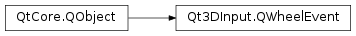

Qt3DInput.QWheelEvent¶
Synopsis¶
Functions¶
- def
angleDelta() - def
buttons() - def
isAccepted() - def
modifiers() - def
setAccepted(accepted) - def
type() - def
x() - def
y()
Detailed Description¶
The
PySide2.QtGui.QWheelEventclass contains parameters that describe a mouse wheel event.Mouse wheel events occur when the mouse is rotated.
-
PySide2.Qt3DInput.Qt3DInput.QWheelEvent.Buttons¶ Constant Description Qt3DInput.QWheelEvent.LeftButton Qt3DInput.QWheelEvent.RightButton Qt3DInput.QWheelEvent.MiddleButton Qt3DInput.QWheelEvent.BackButton Qt3DInput.QWheelEvent.NoButton
-
PySide2.Qt3DInput.Qt3DInput.QWheelEvent.Modifiers¶ Constant Description Qt3DInput.QWheelEvent.NoModifier Qt3DInput.QWheelEvent.ShiftModifier Qt3DInput.QWheelEvent.ControlModifier Qt3DInput.QWheelEvent.AltModifier Qt3DInput.QWheelEvent.MetaModifier Qt3DInput.QWheelEvent.KeypadModifier
-
PySide2.Qt3DInput.Qt3DInput.QWheelEvent.angleDelta()¶ Return type: PySide2.QtCore.QPointReturns the distance that the wheel is rotated, in eighths of a degree. A positive value indicates that the wheel was rotated forward (away from the user), a negative value indicates the wheel was rotated backward (toward the user).
Return type: PySide2.QtCore.intReturns a bitfield to be used to check for mouse buttons that may be accompanying the wheel event.
-
PySide2.Qt3DInput.Qt3DInput.QWheelEvent.isAccepted()¶ Return type: PySide2.QtCore.boolReturns whether the event was accepted.
-
PySide2.Qt3DInput.Qt3DInput.QWheelEvent.modifiers()¶ Return type: PySide2.Qt3DInput.Qt3DInput::QWheelEvent.ModifiersReturns the keyboard modifiers that may be accompanying the wheel event.
-
PySide2.Qt3DInput.Qt3DInput.QWheelEvent.setAccepted(accepted)¶ Parameters: accepted – PySide2.QtCore.boolSets the event as accepted if
acceptedis true.Note
When an event is accepted, it will prevent further propagation to other listeners.
See also
PySide2.QtCore.QEvent.isAccepted()
-
PySide2.Qt3DInput.Qt3DInput.QWheelEvent.type()¶ Return type: PySide2.QtCore.QEvent.TypeReturns the
QEvent.Typeof the event.
-
PySide2.Qt3DInput.Qt3DInput.QWheelEvent.x()¶ Return type: PySide2.QtCore.intReturns the x position of the mouse event.
-
PySide2.Qt3DInput.Qt3DInput.QWheelEvent.y()¶ Return type: PySide2.QtCore.intReturns the x position of the mouse event.
© 2018 The Qt Company Ltd. Documentation contributions included herein are the copyrights of their respective owners. The documentation provided herein is licensed under the terms of the GNU Free Documentation License version 1.3 as published by the Free Software Foundation. Qt and respective logos are trademarks of The Qt Company Ltd. in Finland and/or other countries worldwide. All other trademarks are property of their respective owners.